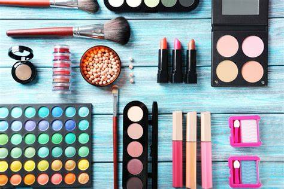
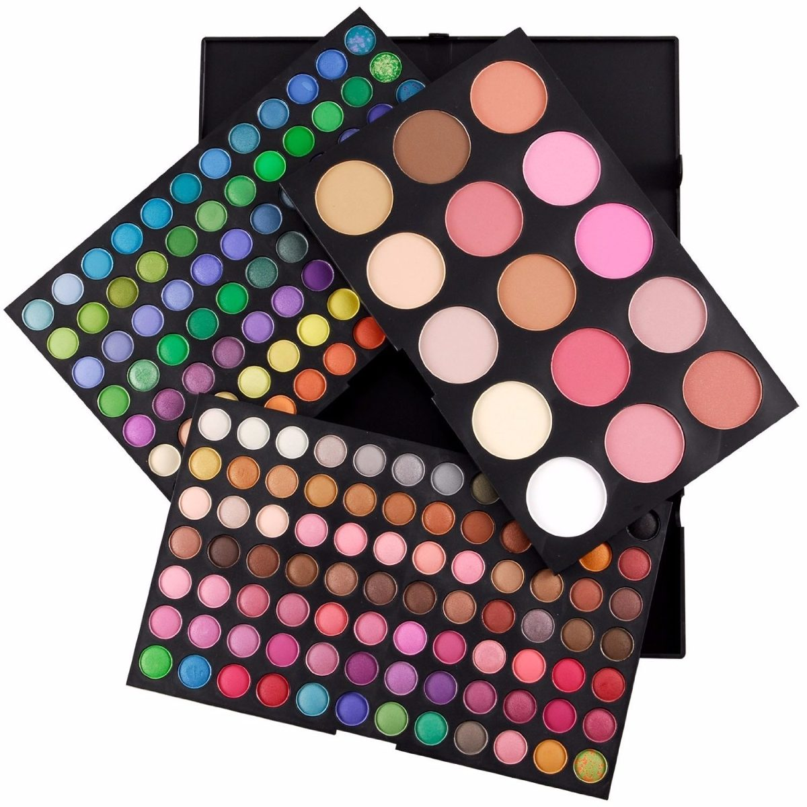
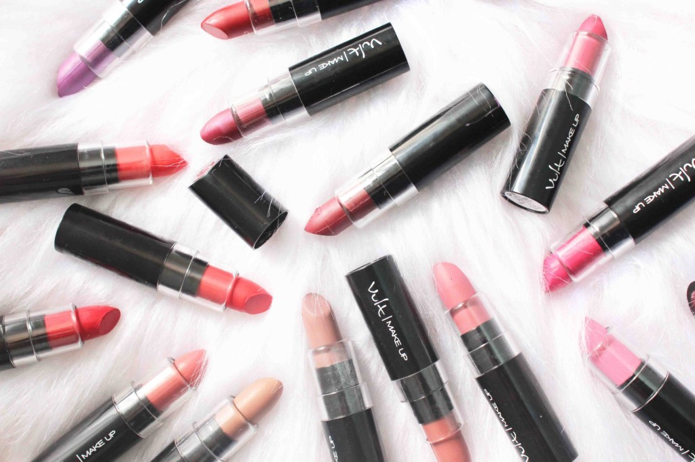

div {
border: 1px solid black;
margin-top: 100px;
margin-bottom: 100px;
margin-right: 150px;
margin-left: 80px;
background-color: lightblue;
}
Make up
Mejores consejos de maquilaje.

Las paletas de maquillaje de sombras son algo basicas para comensr un maquillaje tambien son primordiales.

Los labiales son algo importante en el maquillaje para dar color a en maquillaje.

Las brochas son una herramienta fundamentl para aquellas que quieres aprender a paquillarse.

¿Cómo saber si una sombra de ojos es buena?
Una buena sombra de ojos tiene una buena pigmentación, es decir que, así como se ve en la paleta, en el frasco o varita, debe verse en el ojo.
¿Cuáles son los labiales que duran todo el día?
Ever Red dy 507.
549 Always Rosy.
Brazen Raisin 542.
Canyon 626.
Naturalast 545.
Las mejores marcas de brochas son: No hay bloguera que no tenga en su poder la famosa F80, una imitadísima e incluso premiada brocha tipo kabuki. Fue en 2009 cuando la firma lanzó su primer kit esencial de brochas, causando furor entre aficionados y profesionales. Después, ha ido cosechando nuevos éxitos con «hits» como el guante para limpiar brochas o el estuche de viaje para brochas que se convierte en bote para el tocador. Cabe destacar la buena relación calidad / precio de sus brochas, que son suaves, tupidas, y reparten muy bien el producto. Destaca la gama de brochas sintéticas, con fibras antibacterianas que además no absorben producto.
¿Como elegir la base de maquillaje correcta?
Si tienes la piel cálida, utiliza bases con sub tonos amarillos y dorados.-
Si tu piel es fría, elige bases con sub tonos más rosados.- Si tu piel es neutra opta por tonos beige o dorados para darle color a tu rostro.
Los mejores consejos los encuentra aqui.